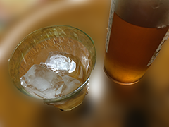

ちょっと手間ひまかかるけど、漬ければ一年楽しめます
＼ 保存食レシピサイト ※ほんの一例です。／
梅酒の漬け方
らっきょう
梅干し
梅酒
FAQ
home
材料（1kgあたり)
梅
1kg
果実酒用アルコール
1.8ℓ
氷砂糖
700g
準備するもの
瓶
耐熱性で口の広いもの
注意
お酒は二十歳になってから
手順

梅を洗ってヘタをとる
水に一晩つけて、アクを抜く
梅に竹串などで5、6個穴をあける
瓶に梅、氷砂糖、果実酒用アルコールを入れる
蓋をしめて、半年待つ
梅酒をつけたら...
梅ジャム
梅ゼリー
漬かった梅で、ジャムが作れます。
そのままかじっても美味！